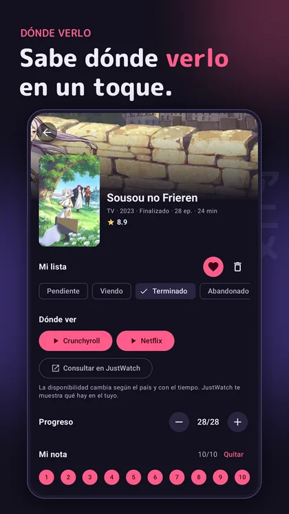
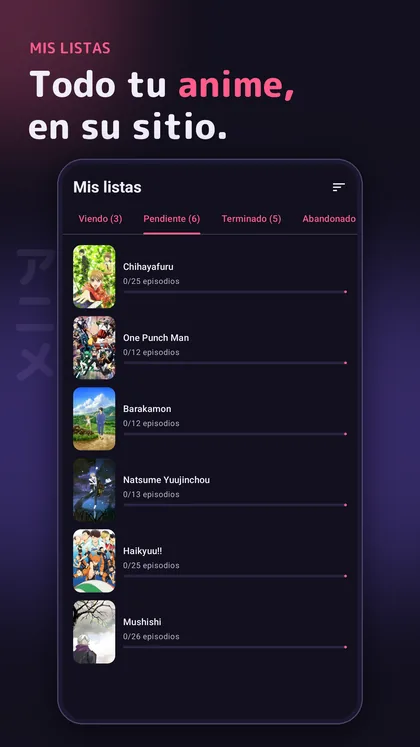

AnimeWatchlist
What anime airs today? Which episode were you on? One tap tells you.
A native Android app to track your anime lists (plan to watch, watching, dropped and completed) with per-episode progress, a weekly release calendar and where to watch each show. It uses the Kitsu catalogue, needs no account and keeps everything on the device.
- Weekly calendar
- No account
- Works offline
- ES / EN
The app is in closed testing on Google Play: email me your Google account and I'll give you access.


✦ What you can do
Why you'll like AnimeWatchlist
Every new episode, the day it airs
Pick a day and see what gets a new episode, across the whole season or just your lists. If a date isn't confirmed, the app tells you.

All your anime, in its place
Watching, Plan to watch, Completed or Dropped. Add episodes with one tap and give each show your own 1–10 score.
Where to watch it, no searching
Every page has the synopsis, trailer, related seasons and which platforms have it.

Recommend it in a PDF
Mark your favourites, write why and share them with friends in a PDF ready to send.

Your data, on your phone
No account. Save images to use it offline, back up your lists and delete everything whenever you like.
Screenshots of version 1.1
swipe →
-
Weekly release calendar, with estimated dates flagged. -
Lists with per-episode progress. -
Show page with where to watch, progress and personal rating. -
Recommendations shared as a PDF. -
Settings: offline mode, data deletion and backup.
Fancy trying AnimeWatchlist?
The app is in closed testing on Google Play: email me your Google account and I'll give you access.
{ } Under the hood
How it's built
For anyone curious about what's behind it: the problem, the architecture, real code and the decisions I made.
- current version
- 1.1.0
- phased releases
- 8
- languages
- ES / EN
01 The problem
Anyone following several shows at once ends up with their progress scattered across notes and screenshots, unsure which day each episode comes out or where to watch it legally.
02 A look at the code
/**
* The anime airing now, kept in a file. Loading them takes about fifteen requests to Kitsu, so the
* calendar shows the saved copy at once and only asks again when that copy is a few hours old.
*/
class AiringRepository(
private val catalog: AnimeCatalog,
private val file: File,
private val json: Json,
private val now: () -> Long = System::currentTimeMillis,
) {
@Serializable
private data class Snapshot(val savedAt: Long, val animes: List<Anime>)
/** The saved copy, however old, or null when there is none or it can't be read. */
suspend fun cached(): CachedAiring? = withContext(Dispatchers.IO) {
try {
if (!file.exists()) return@withContext null
val snapshot = json.decodeFromString<Snapshot>(file.readText())
CachedAiring(snapshot.animes, fresh = now() - snapshot.savedAt < MAX_AGE_MS)
} catch (_: IOException) {
null
} catch (_: SerializationException) {
null
} catch (_: IllegalArgumentException) {
null
}
}
/** Asks Kitsu again and replaces the saved copy. Throws [IOException] without a connection. */
suspend fun fetch(): List<Anime> {
val animes = catalog.airing()
withContext(Dispatchers.IO) {
try {
val temp = File(file.parentFile, "${file.name}.tmp")
temp.writeText(json.encodeToString(Snapshot(now(), animes)))
temp.renameTo(file)
} catch (_: IOException) {
// Not saving only means the next visit loads from the network again.
}
}
return animes
}
// …
private companion object {
const val MAX_AGE_MS = 6L * 60 * 60 * 1000
}
}
03 What I built
- Kotlin and Jetpack Compose with Room, DataStore, Navigation Compose, Coil 3, OkHttp and kotlinx.serialization.
- Data source chosen after comparing APIs (Kitsu versus AniList), with the research documented in the repository.
- Weekly calendar with all airing anime or just your lists. When Kitsu has no date it estimates one episode a week and says so on screen.
- 6-hour cache with atomic writes so the calendar opens instantly, plus batched refresh on launch of only the stale entries.
- Synopses translated on device with ML Kit and genres translated with a hand-written table.
- Recommendations exportable to PDF, list backups and saved images so the app works offline.
- AdMob banner with Google's consent form (UMP). No links to unlicensed sites, to comply with Google Play policies.
- Eight versions delivered in phases (1.0.0 to 1.1.0), with one branch per issue and pull requests into develop.
04 Decisions and why
- Kitsu instead of AniList or MyAnimeList. Before writing code I read their terms: AniList explicitly forbids anime trackers and MyAnimeList requires written permission for apps with revenue. All access goes through one interface (AnimeCatalog), so switching provider touches a single class.
- When Kitsu has no air date, the app estimates one episode a week and says so on screen. An honest estimate beats an empty calendar or a made-up date.
- On-device synopsis translation with ML Kit. Kitsu is almost English-only; this way nothing is sent to a server and the model (about 30 MB) is only downloaded if you use the app in Spanish.
- No links to sites that stream anime without a licence; the (+) button runs a Google search. Google Play forbids it and it would put the developer account at risk.
Transparency: the status above reflects the project roadmap. The repository is private because the app is on Google Play; the code excerpt is verbatim and I can walk through the rest in an interview.